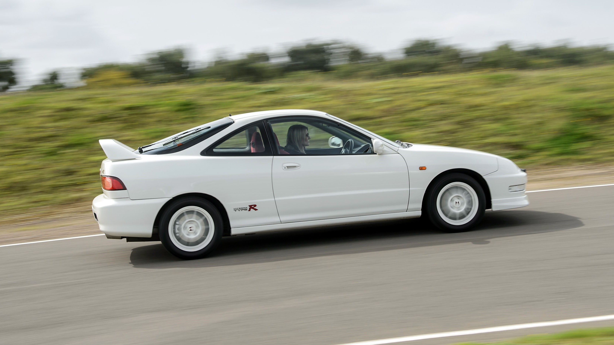
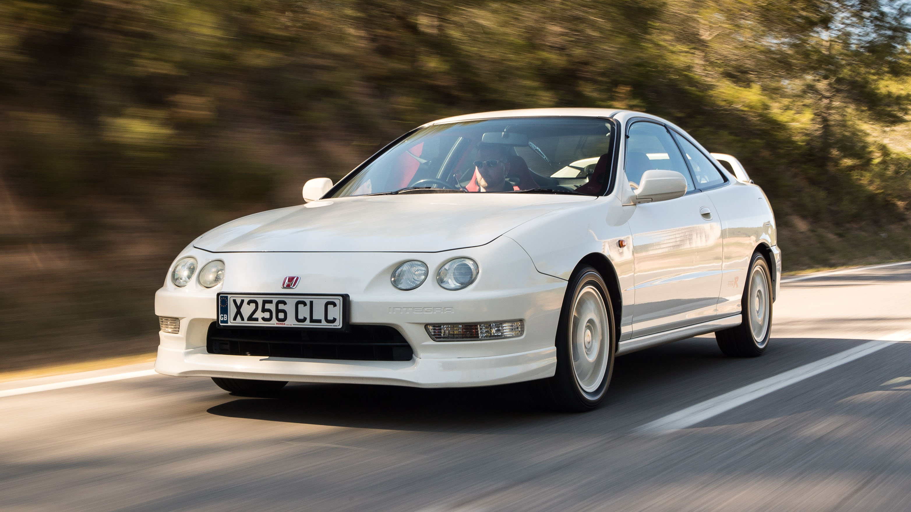
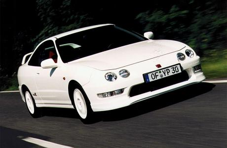
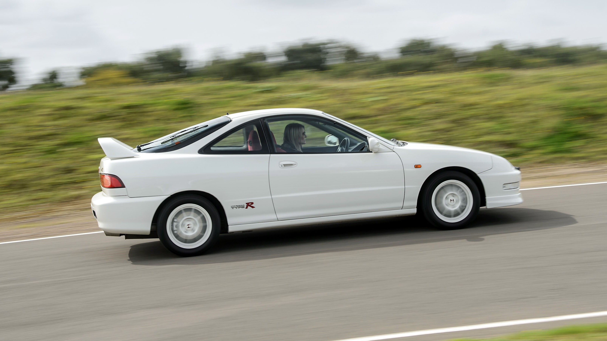
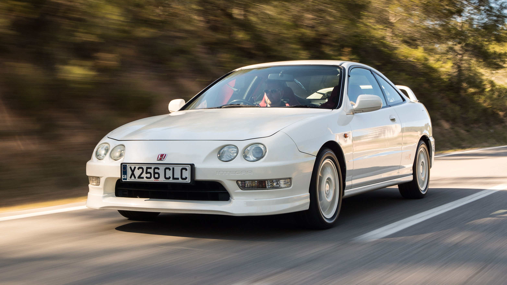
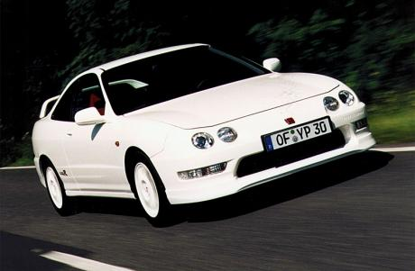

90's Acura Integra
- K Swap; Honda Integra Type R DC2
- Midnight Marauder | Zosh's Integra
- Touge run. | Honda Integra DC2 Type-R JDM
The Honda Integra (Japanese: ホンダ インテグラ, Hepburn: Honda Integura), marketed in North America as the Acura Integra, is an automobile produced by the Japanese automobile manufacturer Honda from 1985 until 2006, and then since 2021. It succeeded the Quint as a more luxurious and sport-oriented derivative of the Civic. The Integra was one of the launch models for Acura in the US in 1986 alongside the Acura Legend. Throughout its production run, the Integra was highly regarded for its handling and performance. The 1995–2001 Integra Type R is widely regarded as one of the best front-wheel-drive cars of all time. The Integra nameplate was revived in 2021 after a 16-year hiatus. The Honda Integra nameplate is used for a restyled Honda Civic sedan for the Chinese market, while the Acura Integra nameplate is used for a Civic-based liftback for North America, replacing the Acura ILX.
Type R
In 1995, Honda introduced the Integra Type R to the Japanese domestic market. The Japanese specification Type R came standard with a 147 kW (200 PS; 197 hp) factory-tuned variant of the B18C engine. Power figures varied slightly between markets, with USDM cars putting out 145 kW (198 PS; 195 hp) and UK-spec cars making 139 kW (190 PS; 187 hp). Equipped with a close-ratio 5-speed manual transmission and a helical-type limited-slip differential, the Integra Type R had significantly improved performance and handling relative to the GS-R/Si/SiR-G Integra. These were the result of extensive changes, including a strengthened chassis with extra spot welds and thicker metal around the rear shock towers and lower subframe, weight reduction (reduced sound insulation, 10 percent thinner windscreen, lighter wheels), more power, rev limiter set at 8,600 rpm JDM (8,500 rpm USDM, 8,700 rpm UKDM), hand-built engine featuring hand-polished and ported intake ports, high-compression pistons, undercut valves and revised intake and exhaust systems, and suspension upgrades. The result was a capable sports liftback which was acclaimed by motoring journalists worldwide. The JDM version was significantly lighter than the SiR Integra (The 96–97 spec model could delete the air bags, air conditioning, rear wiper, radio, center console, clock, power steering and anti-lock brakes), However, there is only a 33 lb[citation needed] (15 kg) net weight difference between the USDM Integra Type R and the Integra GS-R because the extra metal and cross bracing in the Type R negate much of the 98 lb of weight reductions. The Type R was the only Type R ever sold in North America with the Acura badge. For the European, Australian and New Zealand market, the Integra was sold as a Honda with the four headlight front-end design. The JDM Type R received significant upgrades in 1998 and is known as the '98 Spec R. Some of the main changes were a redesigned rear bumper, 16-inch wheels with 215/45R16 tires, 5-lug nut wheel hubs and bigger brakes. Gear ratios for the final drive were higher, making 1st to 3rd gears closer, while 4th and 5th were longer to maintain the '96 Spec cruising comfort. The engine power remained the same, but use of a new 4–1 long tube header brought torque lower down to 6,200 rpm. A final revision of the JDM Type R known as the '00 Spec R included a revised intake camshaft, and more finely balanced drive shafts. A final trim version offered in mid-2000 onwards for the JDM market (known as the "Type Rx") came factory fitted with motorized folding mirrors, dashboard clock, blue-hue carbon trim interiors, and an audio system as part of the standard package.
.jpg?t=163530874837) 





Top 5 Integra builds
Different Trims
RS: Rally Sport was available in both liftback and sedan. There was no sedan available in 1998. Model dropped in 1999. In 1994, equipped with the 1.8-liter DOHC (B18B1) 4-cylinder engine producing 142 hp (106 kW; 144 PS) and 137 lb⋅ft (186 N⋅m) of torque. RS models were the predecessor to the Type R model that was released in 1997.[citation needed] In 1995, power ratings dropped to 148 hp (110 kW; 150 PS) and 124 lb⋅ft (168 N⋅m) of torque due to U.S. emissions regulations. Standard features were a cassette player, rear-window defroster, and tilt steering wheel. The cassette player was replaced with a CD player in 1997. The RS models as well as Type Rs did not come with moonroofs as an option, while the LS, SE, GS, and GS-R sub-models did. LS: Luxury Sport, was available in both liftback and sedan a leather-wrapped steering wheel and shift knob. SE: Special Edition, was available in both liftback and sedan starting from 1995. This trim package was only available in 1995 and 1996 model years until they were changed to be named the GS in 1997. From the LS, it added leather seats, alloy wheels on all years, and a rear-wing spoiler (optional). GS: Grand Sport, was available in both liftback and sedan starting from 1997. Same standard features as the SE. Including a rear spoiler. GS-R: Grand Sport Racing, was available in both liftback and sedan. Equipped with the 1.8-liter DOHC VTEC (B18C1) 4-cylinder engine producing 170 hp (127 kW; 172 PS) and 128 lb⋅ft (174 N⋅m) of torque. It came equipped with a rear spoiler, 6-speaker stereo, power moonroof, 195/55/VR15 tires and alloy wheels. The leather option package would add leather upholstery, leather-wrapped steering wheel and shift knob. An automatic transmission is an option in certain markets for this model. Type R (1997-1998 and 2000-2001): was only available as a liftback. Equipped with the 1.8-liter DOHC VTEC (B18C5) 4-cylinder engine producing 195 hp (145 kW; 198 PS) limited-slip differential, unique interior trim, front spoiler, high rear wing, Type R badging, lowered sport suspension, and unique 7-spoke 5-lug 15-inch alloy wheels. Deletes air conditioning, leather upholstery, tilt/height adjustable driver seat, visor mirrors, power moonroof, and cruise control. Air conditioning would be a dealer-installed option.
Click to go up.